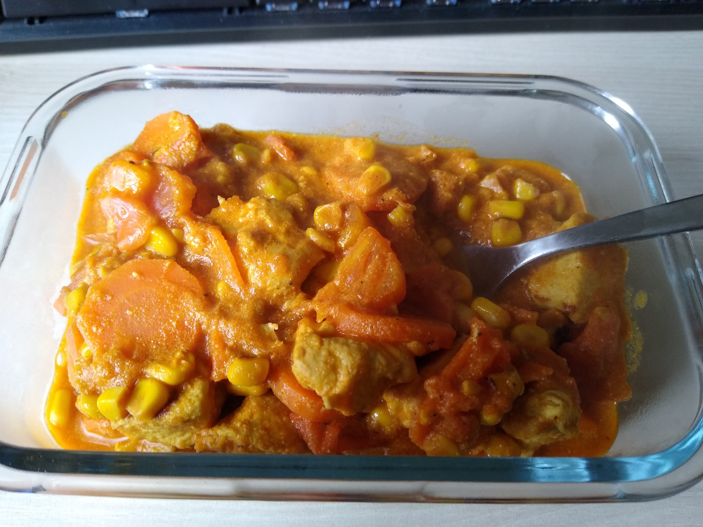

Cream Chicken

Ingredients
| Chicken breasts |
500 gr |
| Carrots |
3 or 4 pieces |
| Sweet Corn |
2 pieces |
| Tomatoes |
2 pieces |
| Salt |
1 tsp |
| Black pepper |
1/4 tsp |
| Tumeric (Kurkuma) |
1/4 tsp |
| Paprika |
1/2 tsp |
| Garlic Powder |
1/4 tsp |
| Sour Cream |
200 gr |
Instructions
- Cut the chicken into cubes.
- Cook them in olive oil for 3 to 4 minutes.
- Peel and slice carrots into thing circles.
- Flip the chicken and add the carrots. Cover and simmer for 5 minutes.
- Add corn, cover and simmer for 3 to 4 minutes.
- Slice the tomatoes into cubes and add them into the pan.
- Season and mix. Let simmer for 2 minutes.
- Add the cream. Simmer for 2 minutes.